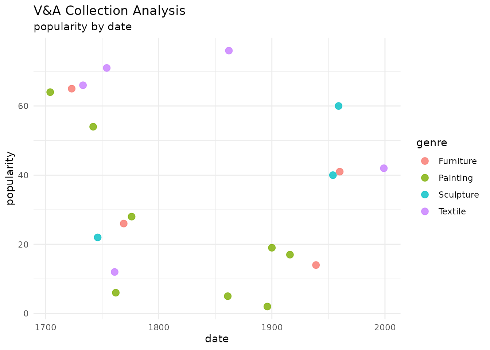
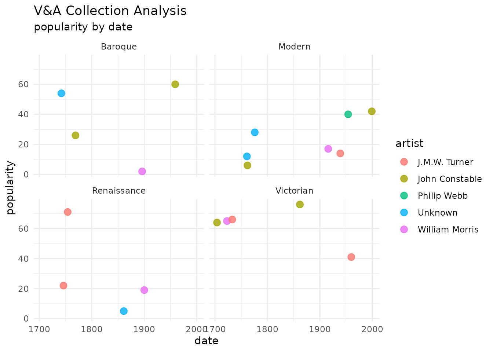

Advanced: Visualization
advanced.RmdVisualizing V&A Data
This vignette demonstrates how to visualize search results to understand trends in the collection.
client <- mcp_connect()
# Search for a broad term to get diverse data
data <- mcp_search(client, "Chair")
#> Could not connect to V&A MCP server or search failed. Returning mock data.Plotting Popularity over Time
We can visualize how the popularity of items varies by their creation date and genre.
vanda_visualise(data, x_col = "date", y_col = "popularity", color_col = "genre")
Faceting by Period
We can use standard ggplot2 functions to further
customize the plot, for example, faceting by period.
vanda_visualise(data, x_col = "date", y_col = "popularity", color_col = "artist") +
facet_wrap(~period)
Session Info
sessionInfo()
#> R version 4.5.2 (2025-10-31)
#> Platform: x86_64-pc-linux-gnu
#> Running under: Ubuntu 24.04.3 LTS
#>
#> Matrix products: default
#> BLAS: /usr/lib/x86_64-linux-gnu/openblas-pthread/libblas.so.3
#> LAPACK: /usr/lib/x86_64-linux-gnu/openblas-pthread/libopenblasp-r0.3.26.so; LAPACK version 3.12.0
#>
#> locale:
#> [1] LC_CTYPE=C.UTF-8 LC_NUMERIC=C LC_TIME=C.UTF-8
#> [4] LC_COLLATE=C.UTF-8 LC_MONETARY=C.UTF-8 LC_MESSAGES=C.UTF-8
#> [7] LC_PAPER=C.UTF-8 LC_NAME=C LC_ADDRESS=C
#> [10] LC_TELEPHONE=C LC_MEASUREMENT=C.UTF-8 LC_IDENTIFICATION=C
#>
#> time zone: UTC
#> tzcode source: system (glibc)
#>
#> attached base packages:
#> [1] stats graphics grDevices utils datasets methods base
#>
#> other attached packages:
#> [1] ggplot2_4.0.1 vanda_0.1.0
#>
#> loaded via a namespace (and not attached):
#> [1] gtable_0.3.6 jsonlite_2.0.0 dplyr_1.1.4 compiler_4.5.2
#> [5] tidyselect_1.2.1 jquerylib_0.1.4 systemfonts_1.3.1 scales_1.4.0
#> [9] textshaping_1.0.4 yaml_2.3.12 fastmap_1.2.0 R6_2.6.1
#> [13] labeling_0.4.3 generics_0.1.4 curl_7.0.0 httr2_1.2.2
#> [17] knitr_1.51 tibble_3.3.0 desc_1.4.3 bslib_0.9.0
#> [21] pillar_1.11.1 RColorBrewer_1.1-3 rlang_1.1.6 cachem_1.1.0
#> [25] xfun_0.55 fs_1.6.6 sass_0.4.10 S7_0.2.1
#> [29] cli_3.6.5 pkgdown_2.2.0 withr_3.0.2 magrittr_2.0.4
#> [33] digest_0.6.39 grid_4.5.2 rappdirs_0.3.3 lifecycle_1.0.4
#> [37] vctrs_0.6.5 evaluate_1.0.5 glue_1.8.0 farver_2.1.2
#> [41] ragg_1.5.0 rmarkdown_2.30 tools_4.5.2 pkgconfig_2.0.3
#> [45] htmltools_0.5.9